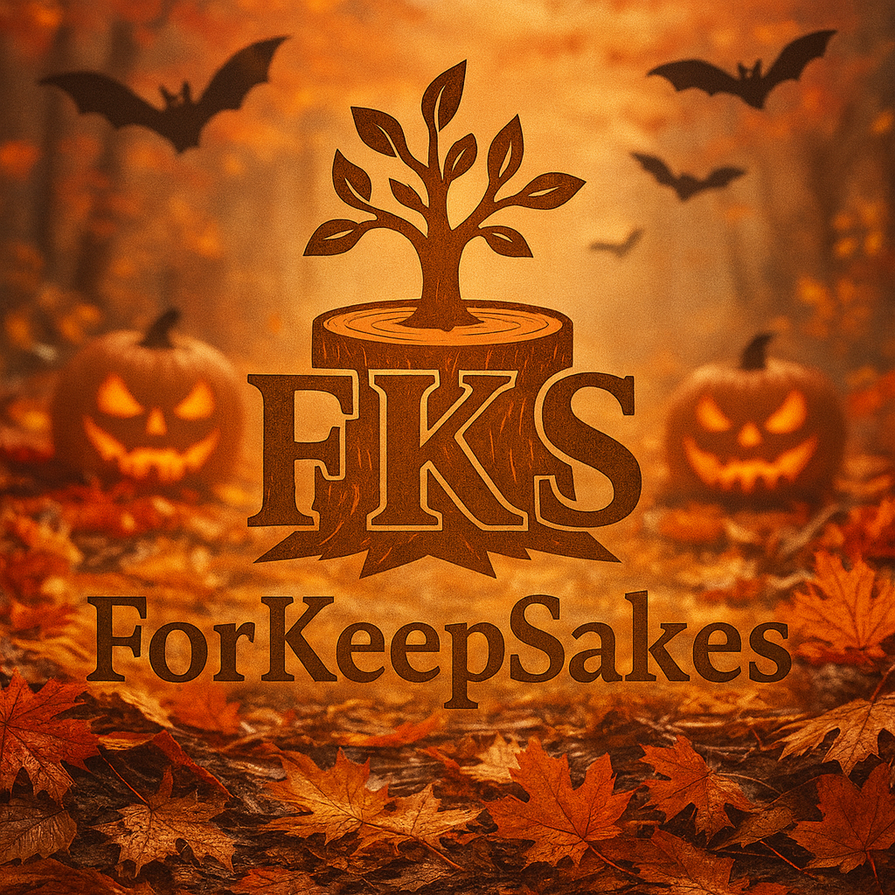

Welcome to ForKeepSakes
Always Forward – Always ForKeepSakes
About ForKeepSakes
ForKeepSakes is more than woodworking — it’s about mental health, creativity, and the courage to grow. Each project, from beginner builds to master-level designs, represents a step forward in turning challenges into something lasting and beautiful.
Whether you’re an amateur picking up tools for the first time or a professional refining your craft, ForKeepSakes is about embracing the process, not just the finished piece. Through every cut, joint, and polish, we build not only keepsakes, but resilience, confidence, and connection.